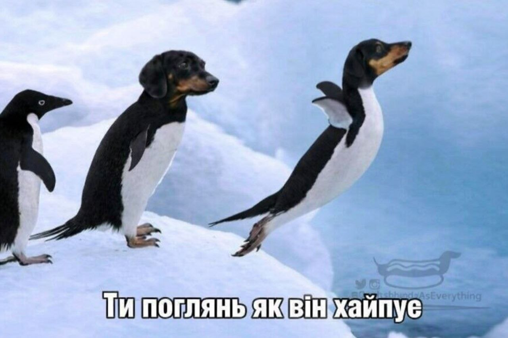

Пінгвін — Ні риба ні мясо, живе в Антарктиді, не літає, їсть рибу.
Розганяються під водою до швидкості 35 км/год, пірнаючи на глибину понад 500 м.
Мають водонепроникне пір'я, товстий шар жиру для захисту від морозів до -60 градусів та здатні пити солону воду.
Пінгвіни живуть величезними групами, щоб зігріватися, постійно міняючись місцями від краю до центру, де тепліше.